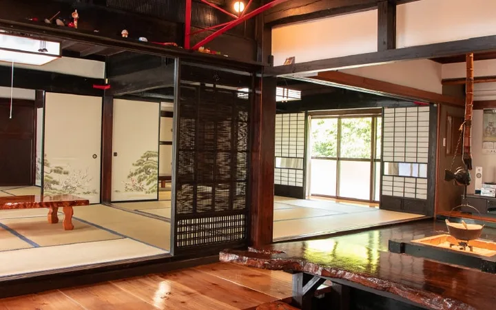
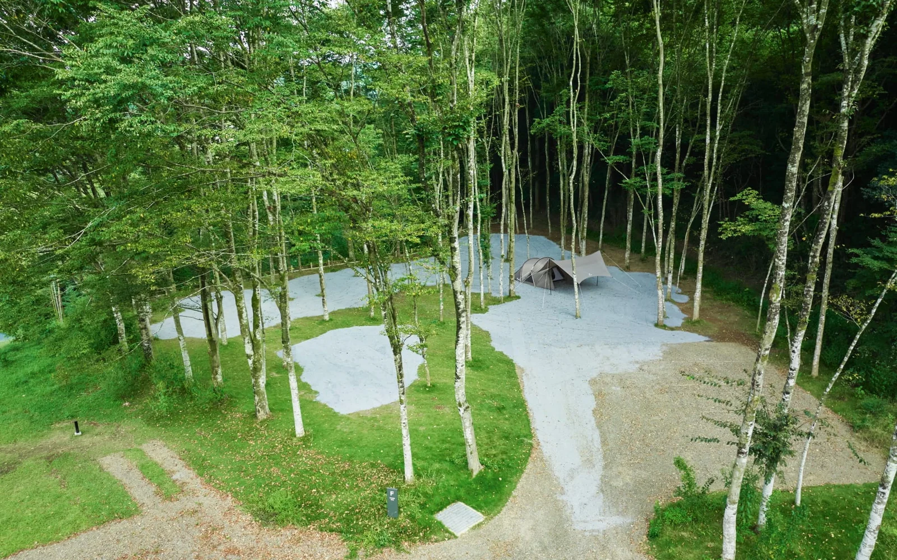
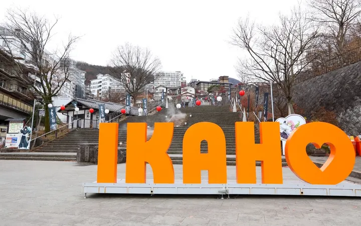
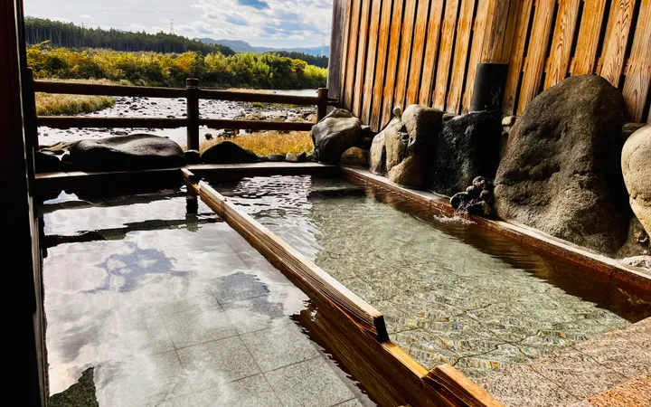
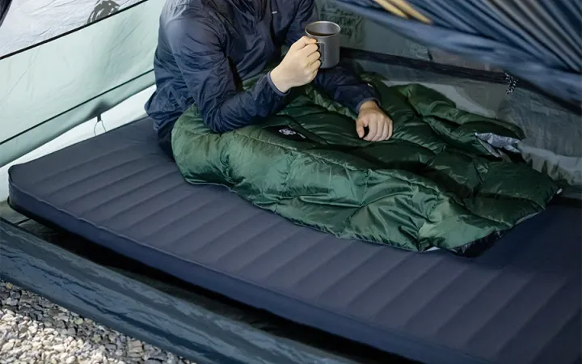
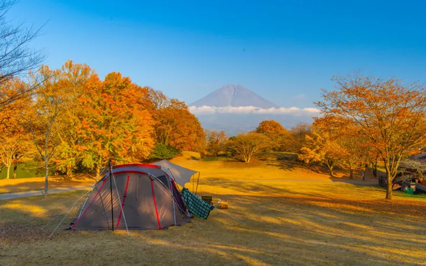

旅館ステイ埼玉・東秩父村
古民家を一棟、貸し切って。
みんなでつくる、最高の休日。
夕食をつくり、五右衛門風呂に浸かり、囲炉裏を囲む。築95年の古民家で過ごした、にぎやかであたたかな一泊二日の記録。
この旅のつづきを読むキャンプと温泉、気ままな週末の記録。

栃木・Snow Peak 鹿沼
夕食をつくり、五右衛門風呂に浸かり、囲炉裏を囲む。築95年の古民家で過ごした、にぎやかであたたかな一泊二日の記録。
この旅のつづきを読む築95年の大正古民家を1棟まるごと貸切。みんなで夕食を作り、五右衛門風呂・野外風呂・ユニットバスの3種を堪能し、囲炉裏を囲んで宴会した最高のグループ旅レポート。
みなかみ高原でスノボ＆温泉ロッジたかねに宿泊。雪質◎、ゲレンデ◎、1泊2食8,900円のコスパ◎、しかも源泉かけ流し貸切温泉付き。のんびり派に最高の雪旅をレポート。

12/6-7の伊香保温泉旅。水沢うどんで始まり、石段街散歩、ホテル天坊の豪華ビュッフェと2種の温泉、朝風呂からの絶景、高崎でのキャンプギア購入まで“ゆるとろ”に満喫した記録です。

鬼怒川沿いの「川霧の湯」で温泉とランチをセットで満喫。川音を聞きながら浸かれる内湯と露天、源泉かけ流しのやわらかいお湯、1,300円ランチセットの満足度をキャンプ目線でレポート。

10cmフォーム×R値5.6のダブルマットを実際の設営ステップと寝心地・断熱性からレビュー。ベッド級の安定感を求める2人キャンパーに向けたポイントをまとめました。

湖畔サイトと焚き火を存分に楽しめるキャンプ場を初心者目線で徹底レビュー。アクセス、設備、A区画のおすすめポイントをまとめました。